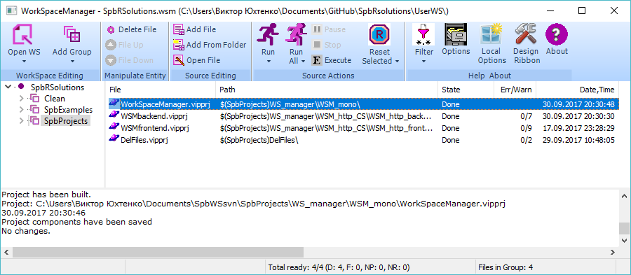
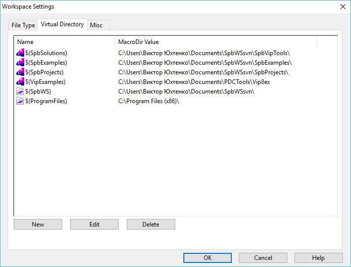
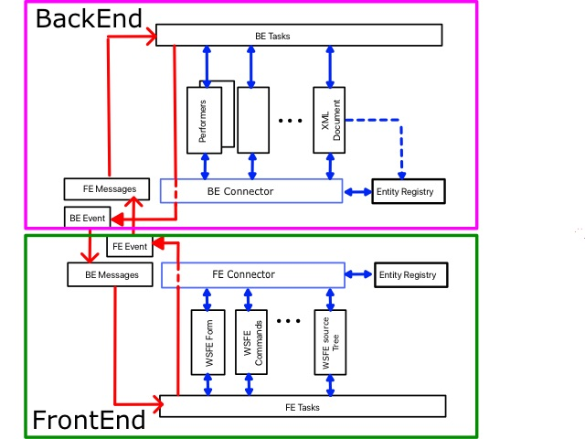
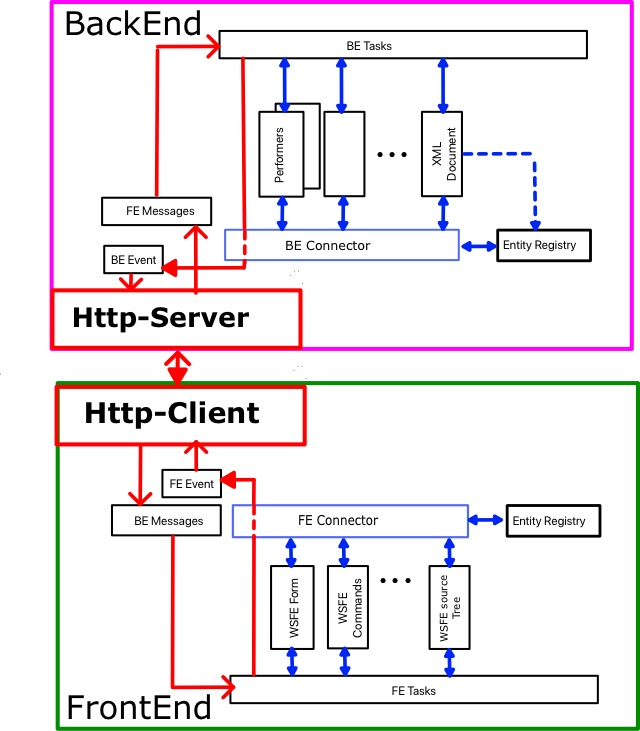
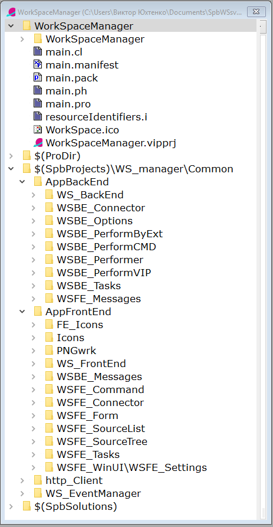
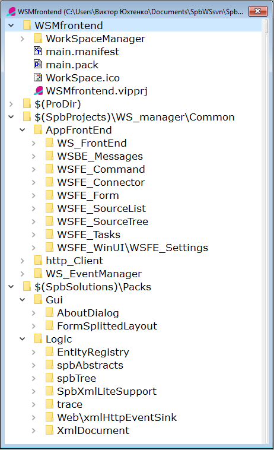
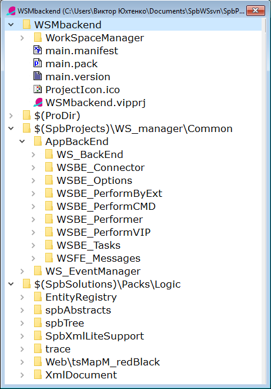

Copyright (c) Prolog Developemnt Center SPb
Experimental project WorkSpace Manager
Motivation
The
idea of developing the WorkSpaceManager application appeared when
trying to use the SolutionManager application, which is part of PDC's
professional version of Visual Prolog.
The need for its use
was due to the fact that there were simultaneously several
interdependent projects in the work that needed to be compiled
together, run for execution. In particular, the situation of using
Visual Prolog system directly "from the pen" of its developers, when it
was necessary to compile a whole lot of projects (there were about 50
of them, including various small examples and tests)
Did not arrange a few moments:
- Work only with projects of the Visual Prolog system, while it was required to use various batch files or even different editors;
- It was impossible to change the order of processing projects;
- Impossibility of grouping projects;
- Adding
projects from one directory did not allow to exclude some of them from
consideration and again to change the order of their processing;
- The inability to use relative addressing of projects in the disk space.
At the same time, we were interested in the following topics:
- Strict separation of the logical part of the application and its user interface;
- Microservices;
- Using the concept of plug-ins in applications;
- The
ability to create remote services for creating and compiling Visual
Prolog projects (the idea was once born in the discussion of Leo
Schou-Jensen and Thomas Puls, in which I participated).
Therefore,
the WorkSpaceManager (WSM) project brought together our needs and our
architectural searches for applications based on Visual Prolog.
It is assumed on this project to develop techniques and tools for building full-fledged microservices.
The
project before the first working version was developed by V. Yukhtenko
(Prolog Development Center SPb), later Boris Belov took part in the
work. In solving the tasks of http interaction, Andrey Basukinsky
helped.
Functionality
Resource
The basic unit of
processing in WSM is a file whose extension defines its type.
Over each file can be performed four
operations "Oper1", "Oper2", "Oper3" "Oper4". The nature of each of the
operations, with respect to a file of a certain type, is not strictly
fixed and is determined by the user.
In the current implementation, these four operations are assigned the following names
- "Oper1" - "Open";
- "Oper2" - "Build";
- "Oper3" - "Build Completely";
- "Oper4" - "Run".
which is inspired by the basic operations on projects in the Visual Prolog system.
So, for the project file of the Visual Prolog system having the extension .vipprj, it is assumed that
- The Open operation causes the project to open in the Visual Prolog system.
- The "Build" operation passes this file to VipBuilder.exe, which builds the project,
- The "Build Completely" operation passes this file to VipBuilder.exe, but which performs rebuilding (Rebuild All) of the project,
- The "Run" operation calls execution of the built-in application.
For
a file with any other extension (of another type), the operation
semantics can be any other, but in general, each operation looks like a
command line in the MSWindows system
<executing program> <prefix> <resource> <suffix>
So
for the operation "Build" the project file test.vipprj of the Visual
Prolog system it looks like this (with accuracy to the routes):
vipBuilder.exe / build test.vipprj
what
causes the building of the project test.vipprj and the creation of
the executable application test.exe, in the directory set by the
project.
WorkSpace
WorkSpace contains a set
of files that are relevant to the user. The user adds and removes files from the workspace as needed.
WSM allows you to
structure a set of files, grouping according to the criteria
defined by the user. The structure is represented as a tree and is not
a file system mapping.
The WorkSpace structure and the results of file processing are saved in a file with the extension .wsm in XML format.
The general view of the application is shown in the following figure:

List of resources and tree
The main working stretch of the user is the file list on the right side of the form.
Here
is the filename, the path to it, the processing status, the
number of errors and warnings, during processing, and the time of the
last processing.
There are four states of the result of processing:
- Done - completed successfully
- Failed - failed
- NoPath - the route to the file or the processing program was not found
- NoRule - the processing rule for this operation is not defined
Above
each resource, one of the four described operations (Oper1, Oper2,
Oper3, Oper4) that are valid for a resource of the appropriate type can
be executed.
Above each file of the selected (marked) list,
one of these operations can also be performed. Operations are performed
in order of priority from top to bottom.
The tree on the
left side of the form is a logical representation of the user about his
workspace. Initially the tree contains only one node - the root, and
all the resources of the right part (if any) belong to this node. The
user can create an arbitrary tree structure
There are two types of tree nodes - a group and a folder.
A group
can contain subgroups and it can have an arbitrary number of files.
The group provides operations for adding, deleting files and moving
them.
The folder corresponds to the disk space directory
contains only those files (of declared types) that are contained in the directory and
its subdirectories.
A
folder can not contain groups. The user
can move the files of the folder and (conditionally) delete them.
Remoted files remain visible and change only the brightness of the row
on the screen. The user can return the file to the active state.
The
right part of the form displays all files of the selected group on the
left, including all files of all subgroups and folders. This allows you
to perform operations on either all files in the workspace, or only
over the part currently in the user's focus.
Above the file
list and above the tree, Drag-And-Drop operations can be performed,
which allows you to quickly reorder priorities and processing strategy.
Moving with the keyboard is also possible.
Virtual directories
The
user can use both absolute and relative addressing of files in the disk
space. Relative addressing is similar to that one, used in Visual Prolog.
The name of the virtual directory is preliminarily determined and this
name is used as a prefix in the file path.
Relative
addressing allows you to move the workspace from one computer to
another, redefining only the location of virtual directories.
The
user can define an unlimited number of virtual directories and edit
their location on this computer. However, virtual directories installed
in the Visual Prolog system can not be changed by WSM. The following
figure shows the editor of virtual directories.

Language
The user interface language can be localized for user preferences.
The language setting file LanguageWSM.xml is located (and always there) in the executable file directory.
The
base language of the interface is English, but most of the form
inscriptions, dialogs and messages can be reassigned by editing the
LanguageWSM.xml file.
Switching the language of the user interface is in the Colors section of the "WorkSpace Settings" dialog.
Architecture
The
architecture of the application from the very beginning of development
was focused on the strict separation of the user interface from the
logical part of the application in the calculation for the subsequent
use of the technology of micro services.
Therefore, the first implementation of the application immediately was done as separated into FrontEnd and BackEnd.
The structure of the mono application is shown in the following figure:

Here
the blue arrows show the connections inside BackEnd and FrontEnd
respectively, and red - the connection between BackEnd and FrontEnd.
Within these structures, the modules access other modules via the BE (FE) -Connector, which accesses the Entity Registry.
Events
originating on the initiative of the opposite side are processed by the
BE (FE) Messages module, which executes the corresponding predicates of
the BE (FE) Tasks module. That, in turn, refers to the rest of the
BackEnd modules (FrontEnd). Having received data for the opposite side,
the BE (FE) Tasks module sends a message through the BE (FE) Event
module. The opposite side subscribes to the data source events for it.
The
initiator of data exchange is always FrontEnd, which initiates
execution of tasks in BackEnd. The work is done in asynchronous mode:
after sending the request, FrontEnd returns to its work. BackEnd, upon
receiving the request, performs a task and, possibly, initiates data
transfer to FrontEnd. This can be either one message or a sequence of
messages that need to be processed in FrontEnd.
This
structure of the application made it possible to pass almost painlessly
to the variant of separate applications (BackEnd and FrontEnd)
interacting via the http protocol, adding and including the Http-Server
and the Http-Client.
The structure of such an application is shown in the following figure

Http-Client and Http-Server themselves convert data and organize their transfer between BackEnd and FrontEnd.
Technologies
In the development of WSM, the technologies PDC VIP v.8, technologies and techniques of in-house development were used:
- Registering objects in public memory;
- Organization of data storage in XML format;
- Exchange of data on the basis of events (Event Messaging) in the format namedValueList;
- Organization of form space on the basis of split Screen;
- Organization of management based on ribbon-panel;
- Client-server architecture;
- Data exchange via http protocol;
- Data exchange in Json format (when using http protocol);
- Use of message queues in conditions of multi-threaded access (when working on http protocol).
The project application structure
The structure of the mono application is given below.

And here are the project structures for Http-FrontEnd and Http-BackEnd
